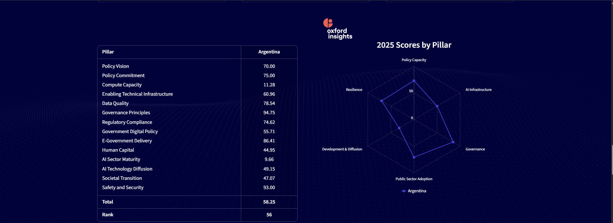

Argentina en el Índice de Preparación ante la IA (2025)
Introducción al Índice de Oxford
El "Government AI Readiness Index" es un informe anual publicado por Oxford Insights que evalúa la capacidad de 195 gobiernos de todo el mundo para adoptar, gestionar e implementar la Inteligencia Artificial en sus servicios públicos, midiendo tanto la infraestructura técnica como las políticas de gobernanza y la madurez de su sector privado.
Posición y Rendimiento General de Argentina
En la edición 2025 del índice, Argentina se ubica en el puesto 56 a nivel global, con un puntaje total de 58.25 sobre 100. Si bien el país se mantiene competitivo en la región de América Latina, el análisis detallado de sus sub-indicadores revela fuertes contrastes entre sus marcos normativos y su realidad de infraestructura tecnológica.

Desglose de Métricas y Contrastes Clave
Nuestras Fortalezas (Gobernanza y Seguridad):
- Principios de Gobernanza (Governance Principles): 94.75 / 100
- Seguridad y Ciberseguridad (Safety and Security): 93.00 / 100
- ervicios de Gobierno Electrónico (E-Government Delivery): 86.41 / 100
Análisis: Argentina destaca significativamente por tener bases éticas, directrices de transparencia y niveles de ciberseguridad estatales muy robustos. El sector público cuenta con una digitalización avanzada para interactuar con la ciudadanía.
Nuestros Cuellos de Botella (Infraestructura y Sector Privado):
- Capacidad de Cómputo (Compute Capacity): 11.28 / 100
- Madurez del Sector de IA (AI Sector Maturity): 9.66 / 100
- Capital Humano (Human Capital): 44.95 / 100
Análisis: El verdadero freno para el desarrollo de la IA en el país es la falta de poder de cómputo soberano y una bajísima madurez del sector comercial dedicado exclusivamente a la IA. Aunque hay talento, el ecosistema de startups tecnológicas locales orientadas a IA es todavía muy pequeño en comparación con líderes globales.